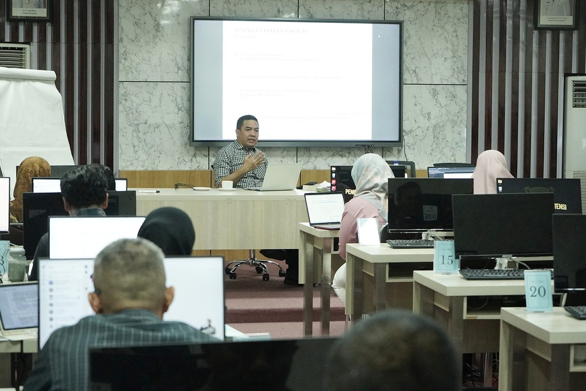
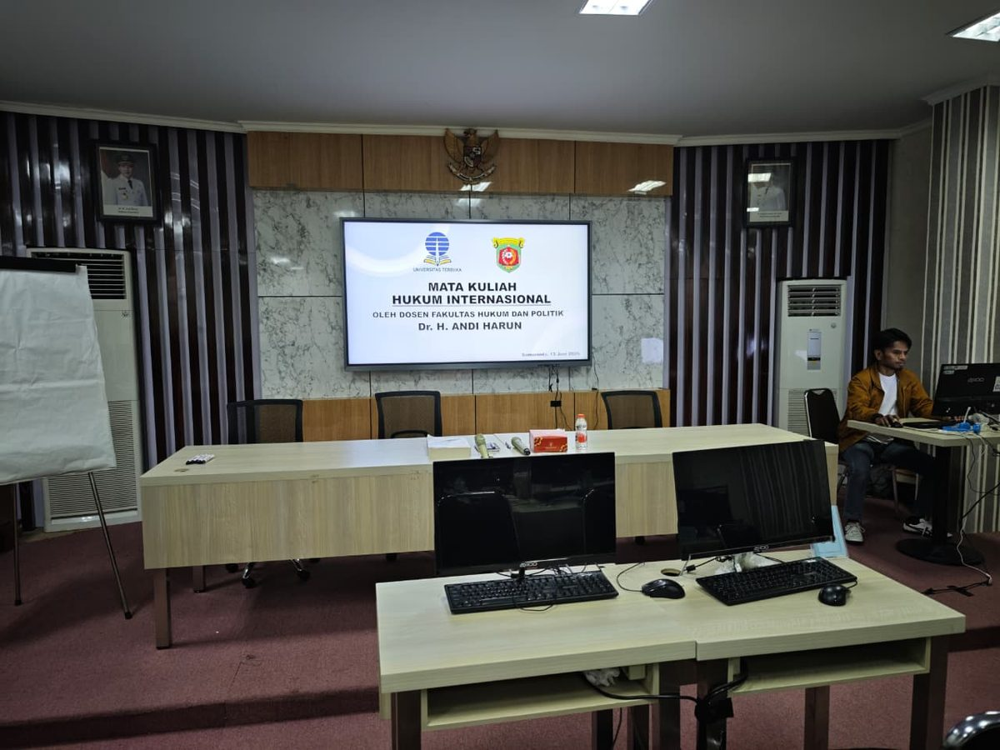
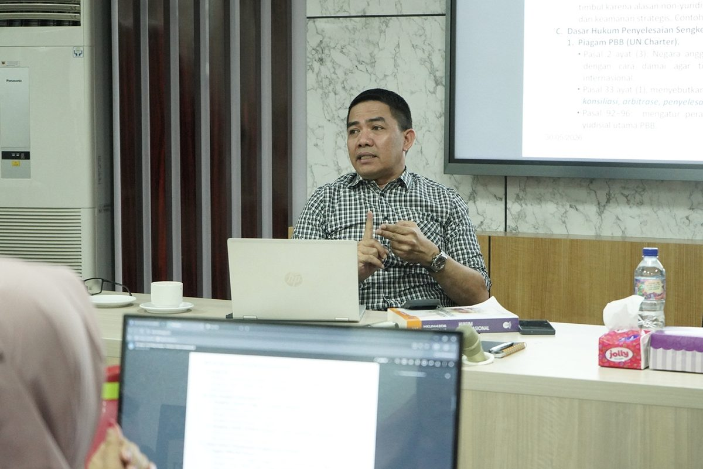
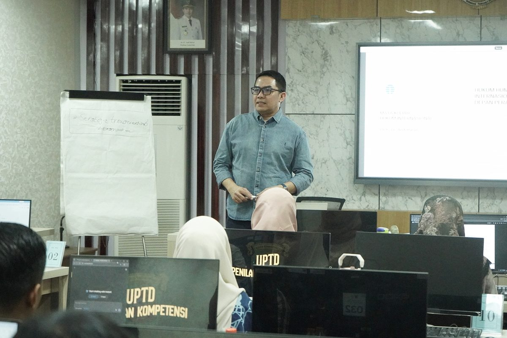
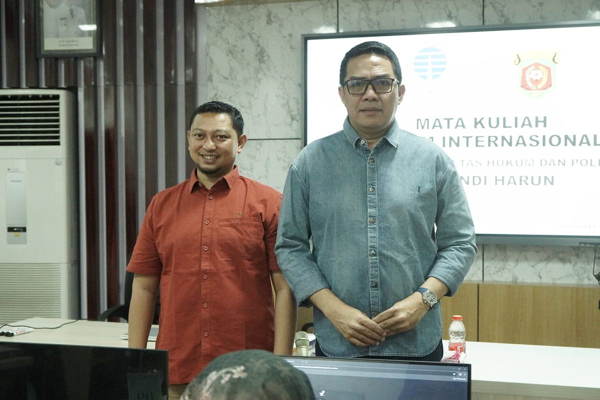
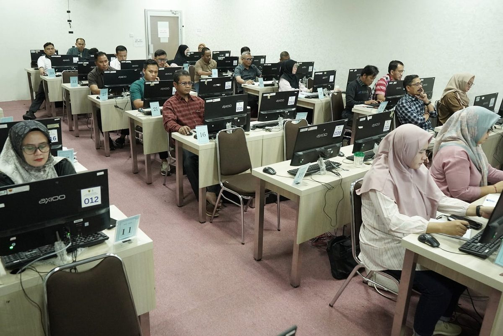
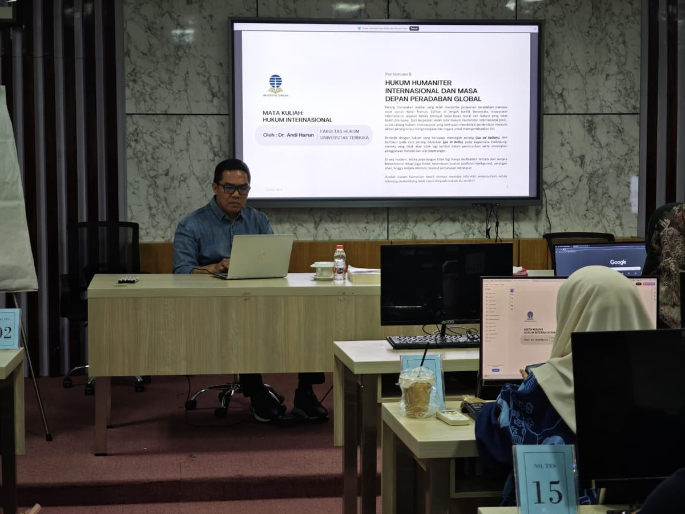
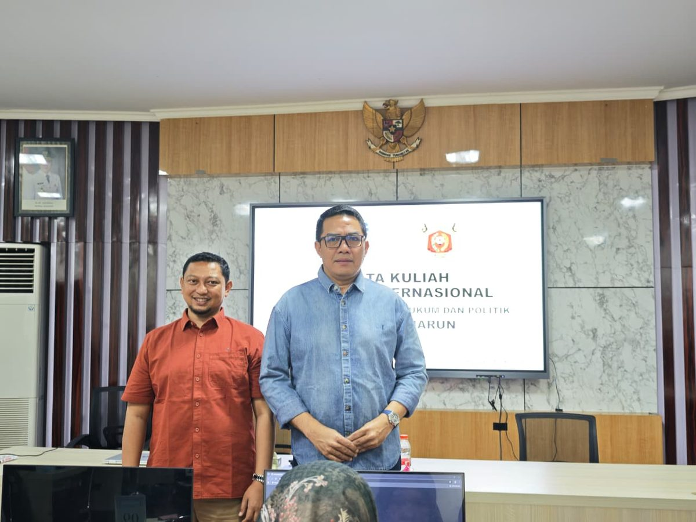
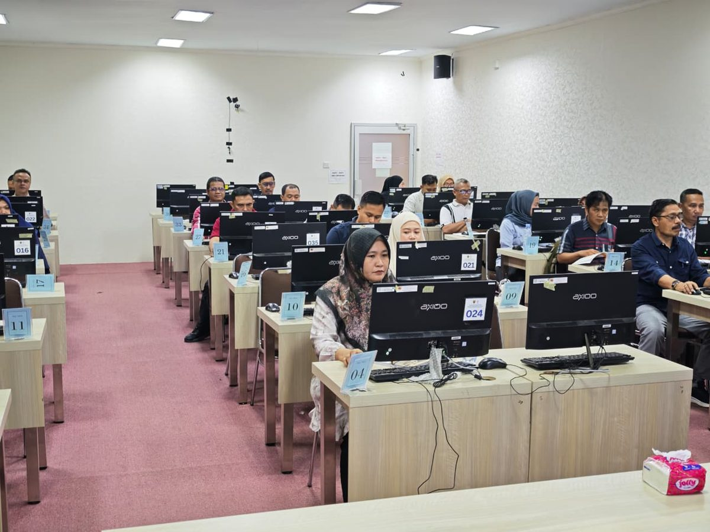

Walikota Samarinda Jadi Dosen: Salut Etam Betuah Gelar Kelas Tatap Muka Hukum Internasional untuk ASN Pemkot

Peserta kelas tatap muka Hukum Internasional, ASN Pemerintah Kota Samarinda di lab komputer Salut Etam Betuah, 13 Juni 2026.
Tidak banyak kampus yang bisa bilang mahasiswanya pernah diajar langsung oleh walikota. Jumat, 13 Juni 2026, Salut Etam Betuah mencatatkan hari yang satu itu.
Dr. H. Andi Harun, Walikota Samarinda sekaligus Dosen Fakultas Hukum dan Politik Universitas Terbuka, duduk di depan kelas. Di layar di belakangnya: slide Mata Kuliah Hukum Internasional. Di depannya: puluhan ASN Pemerintah Kota Samarinda yang pagi itu memilih belajar.
Kelas ini bukan acara seremonial. Tidak ada sambutan panjang. Dr. Andi Harun datang sebagai dosen, buka laptop, dan mulai mengajar.


Bagaimana Kelas Ini Terjadi
Ini tidak terjadi begitu saja. Beberapa waktu sebelumnya, Ahmad Husaini, SH., MH., Kepala Salut Etam Betuah, menemui pihak Badan Kepegawaian dan Pengembangan Sumber Daya Manusia (BKPSDM) Kota Samarinda. Tujuannya satu: membuka jalur kuliah yang benar-benar bisa diakses oleh ASN yang sudah sibuk bekerja.
ASN butuh ijazah untuk naik pangkat. Mereka juga butuh ilmu yang relevan dengan pekerjaan mereka. Ilmu Hukum adalah salah satu yang paling banyak diminta, tapi tidak mudah menemukan program yang fleksibel untuk orang yang sudah punya jadwal padat sejak pagi.
Detail Kelas Tatap Muka:
📚 Mata Kuliah: Hukum Internasional (HKUM4205)
👨🏫 Dosen: Dr. H. Andi Harun, Dosen Fakultas Hukum & Politik, Universitas Terbuka
🏛️ Peserta: ASN Pemerintah Kota Samarinda
📅 Tanggal: 13 Juni 2026
📍 Tempat: Lab Komputer Salut Etam Betuah, Jl. Kadrie Oening 66A, Samarinda
Yang Terjadi di Dalam Kelas
Layar besar di depan ruangan menampilkan judul: Hukum Humaniter Internasional dan Masa Depan Peradaban Global. Ini bukan materi ringan. Dr. Andi Harun membuka sesi dengan pertanyaan: apakah hukum internasional masih relevan di era drone dan kecerdasan buatan?
Ruangan yang tadinya sedikit formal langsung berubah. ASN yang datang dengan seragam dan berkas pegawai itu mulai angkat tangan. Diskusi soal UN Charter, Pasal 2 ayat 3 tentang penyelesaian sengketa secara damai, sampai pertanyaan yang lebih praktis: bagaimana hukum internasional berlaku dalam kebijakan kota?



Sesi ini berlangsung penuh sampai akhir. Lab komputer Salut Etam Betuah yang biasanya dipakai untuk ujian hari itu berubah jadi ruang kuliah yang padat.


Mengapa Ini Penting untuk ASN Samarinda
Banyak ASN masuk dengan ijazah SMA atau D3 dari puluhan tahun lalu. Naik ke golongan tertentu butuh S1. Tapi kuliah reguler tidak mungkin, jadwal dinas tidak bisa ditinggal begitu saja, dan kampus konvensional tidak punya fleksibilitas yang cukup.
UT menjawab itu dengan sistem yang membiarkan mahasiswa belajar kapan saja. Salut Etam Betuah melengkapinya dengan Tutorial Tatap Muka, pertemuan langsung dengan dosen untuk mata kuliah yang butuh penjelasan lebih mendalam. Hukum Internasional adalah salah satunya.
Dosennya bukan sekadar akademisi yang membaca materi dari buku. Dr. H. Andi Harun adalah walikota yang setiap hari menghadapi kebijakan, regulasi, dan dinamika pemerintahan secara langsung. Materi yang dia sampaikan bukan hanya teoritis, ada konteks nyata di balik setiap penjelasannya.

Salut Etam Betuah dan Kerjasama dengan Institusi Pemerintah
Ini bukan yang pertama. Salut Etam Betuah sudah melayani mahasiswa dari berbagai instansi pemerintah di Kalimantan Timur, dari ASN dinas kota, tenaga pendidik, hingga personel TNI dan Polri. Kelas tatap muka untuk kelompok khusus seperti ini bisa diatur sesuai kebutuhan institusi.
Yang berbeda kali ini adalah skala dan nama yang terlibat. Ketika walikota sendiri yang mau duduk jadi dosen untuk pegawainya, itu bukan hal biasa.
Instansi Anda Butuh TTM Serupa?
Salut Etam Betuah bisa mengatur kelas tatap muka khusus untuk instansi pemerintah, BUMN, atau perusahaan swasta di Samarinda dan Kalimantan Timur. Dosen, jadwal, dan tempat bisa disesuaikan.